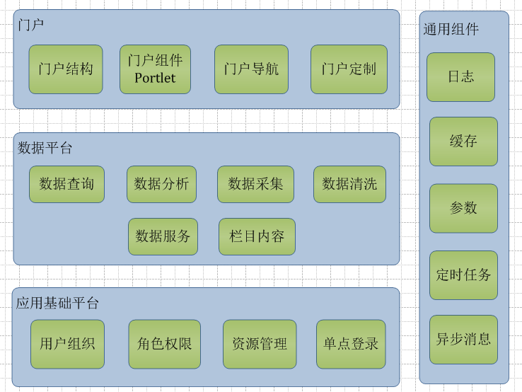
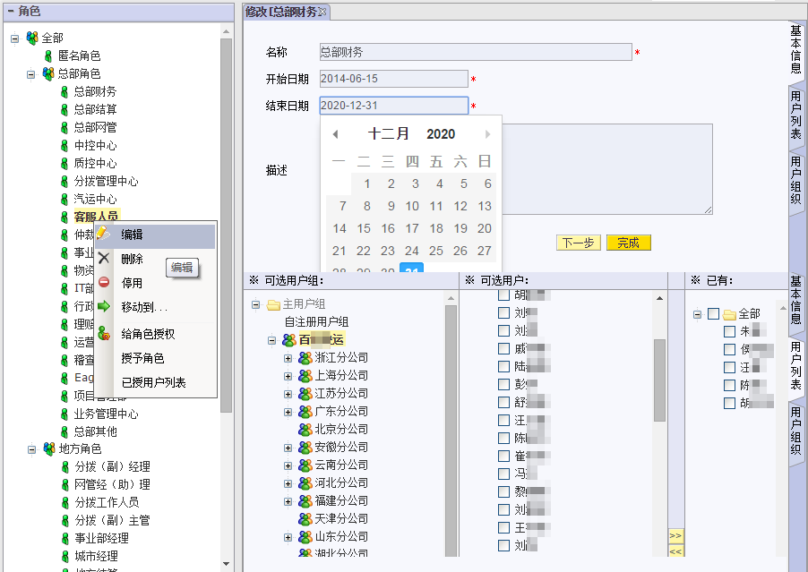
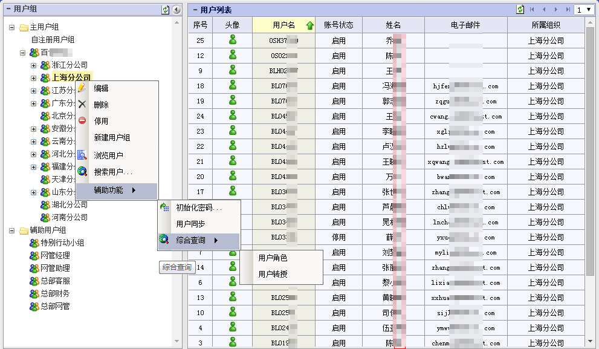
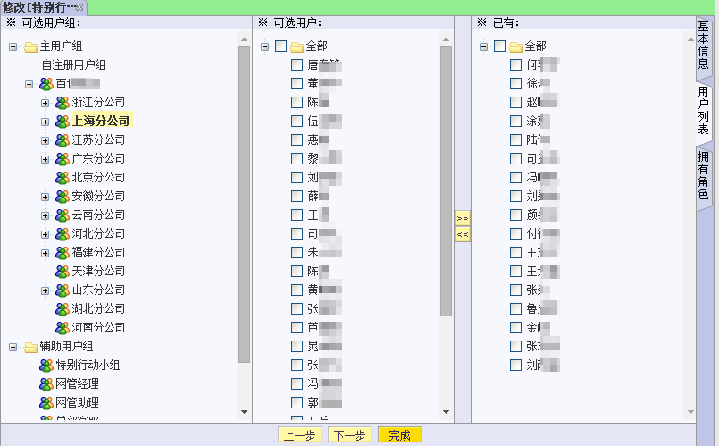
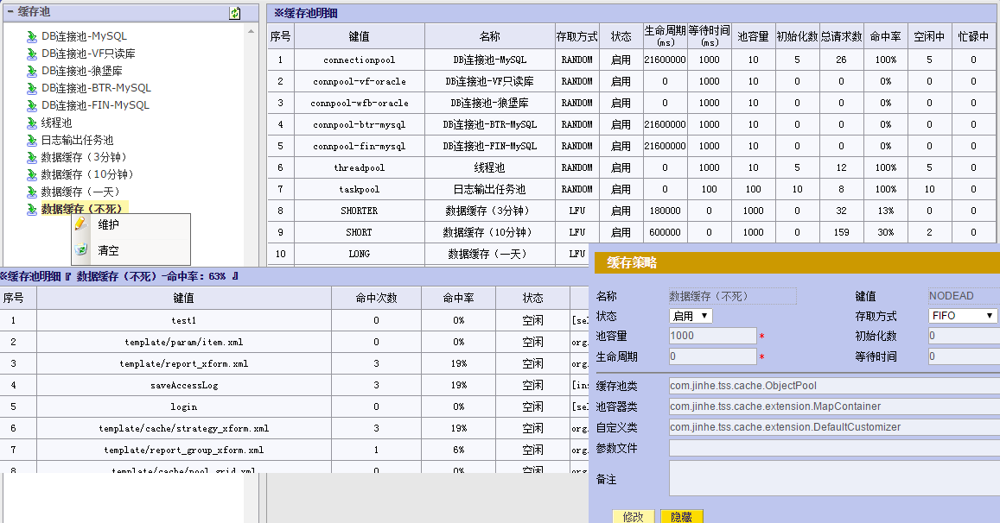
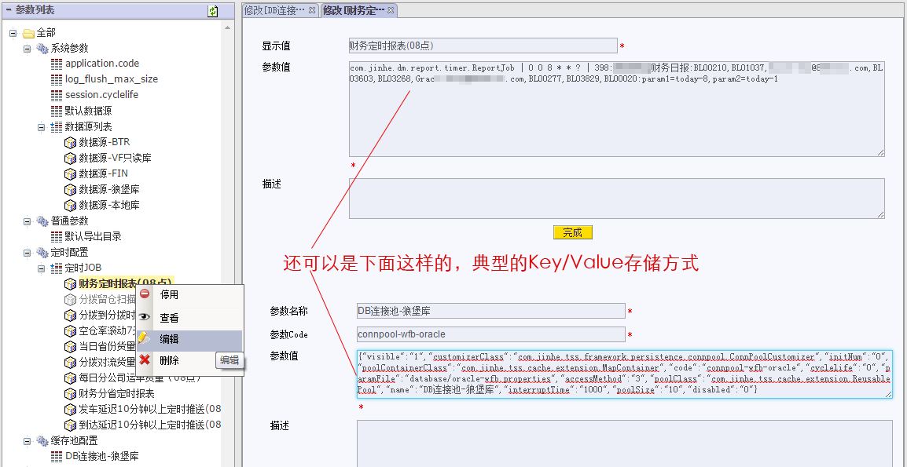
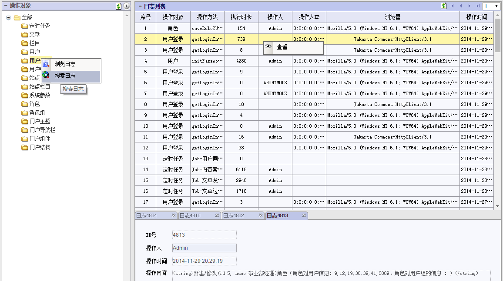

它山之石，可以攻玉；它山之石，可以试错。
编写中。。。。。。,预计12月12号前能完工
它山石功能模块
用户管理（UM）
UM模块负责统一管理用户组织和资源权限，基于角色进行授权，为其他功能模块提供设置权限和读取权限信息等服务。主要功能点有：
1、用户组织管理：组织分两种类型，“主用户组”对应纵向的组织结构，“辅助组”则对应横向的跨组织结构，基于这 两种组织结构，可方便的进行用户管理及设置权限。提供用户同步服务，支持从LDAP、DB等同步。 2、应用资源管理：为各业务系统提供应用和资源注册服务。 3、角色权限管理：维护角色对用户的关系 及 角色对资源的授权信息。在UM里管理员可以对权限进行集中管理， 各业务系统可以通过UM提供的权限服务接口来判断当前登录用户能否操作某个资源的某项功能。管理员可以 多个角度查看用户、组织、角色、资源之间的关联信息。 4、权限转授管理：允许用户创建转授策略将自身拥有的角色转授给其它用户或用户组，可指定过期时间，过期 后自动收回转授的权限。 5、身份验证服务：提供多种认证方式（数据库、LDAP、操作系统、CA证书等等）。
角色设置界面
用户组织管理界面
设置辅助组对用户和角色关系
设置资源对角色授权
门户管理（Portal）
对用户而言，Portal就是一个到所有计算资源的统一入口，以及从各种不同来源或不同应用系统取得的各式各样的数据，并且将这些数据组合展示的呈现平台。TSS Portal模块主要功能有内容聚集和展示、应用程序访问和集成、数据搜索、个性化定制、安全管理等，通过TSS Portal将各种应用系统、数据源、以及互联网资源等，统一集成到单一门户中，同时提供统一的访问入口，并在各个应用系统之间实现单点登录；通过UM的授权服务，针对不同的用户对门户下的各个组成部分进行相应的角色权限过滤，实现个性化门户，用户还可根据自己喜好对门户的内容、风格等进行定制，为用户提供丰富的体验。Portal主要功能点:
1、门户组件，提供通用的Portlet、布局器、修饰器等门户组件，以用来快速开发门户 2、门户结构、门户主题、门户生成、门户发布 3、门户导航，结合门户机制，实现门户页面之间灵活跳转
内容管理（CMS）
内容管理（CMS，“内容”可以是包括文档、图片、数据、视频等一切想要发布到Web的信息）是企业信息资源的管理平台，主要是将企业的信息资源与网络办公有机地协调在一起，提供一个综合管理网站上各种栏目的通用工具，包括栏目的制作，新闻、产品、文档、下载等等。CMS模块能与Portal模块无缝衔接，通过模板引擎，由Portal完成对CMS里各类内容的最终发布与展示。内容的创作人员、编辑人员、发布人员使用内容管理系统来提交、修改、审批、发布内容。CMS主要功能点：
1、站点栏目维护，栏目分发 2、内容（文字、图片、文档、其他附件等）维护 3、全文检索服务
数据管理（DM）
业务数据产生后是独立于业务系统的，只要了解其数据结构，各类数据完全可以交由一个统一的平台进行分析挖掘，只要提供必要的数据源信息，且不限数据库类型（MyQSL、Oralce、SQLserver,甚至NoSQL数据库）。TSS的DM模块正是基于这样的设想，提供可以快速开发报表的功能。使用者只要会写必要的查询语句（SQL等），就可以轻松完成报表开发，并有丰富的各类统计图表模板可供展示调用。DM使的企业管理者能够快速、准确地获取各类重要业务数据。各类分析完备的数据能够为企业管理者在第一时间做出市场决策提供强有力支持和保障。详细内容请点击 《DMS》。DM的主要功能点：
1、数据报表创建与展示 2、权限控制，根据用户所处组织结构及拥有的角色配置来控制其所能浏览的数据范围 3、定时邮件发送报表数据 4、数据分享及定制
对象缓存管理
对象缓存管理模块为系统的性能提供了有力保障。开发者可以基于该功能，方便的应用多数据源连接池、异步功能所需的线程池、各种生命周期的数据对象缓存池等。 
系统参数管理
系统参数管理模块支持配置各类系统级或应用级的参数信息，支持简单参数、列表参数、树形参数等多种形式，包括基础参数信息、定时配置、下拉参数、Key/Value式的数据存储等，都可以在本模块里快速实现，并提供了JAVA和JSON两种读取方式，使用便捷，极大增强了系统的可配置性及灵活性。 
系统日志管理
系统日志详细记录了系统里各种操作的发生的时间、操作人、机器地址及浏览器类型、操作内容等，方便事故追责，为系统的安全提供了有力保障。 
定时服务
提供各类定时服务：定时报表、定时邮件发送、定时同步或清洗数据、定时创建索引等。
异步消息处理
结合缓存管理模块实现的线程池和任务队列，可支持对业务逻辑进行异步处理。